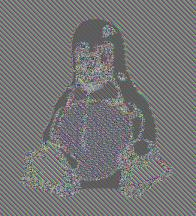

ECB
The simplest of the encryption modes is the
Electronic Codebook (ECB) mode (named after conventional physical
codebooks[10]). The message is divided into blocks, and each block is encrypted separately.
The disadvantage of this method is a lack of
diffusion. Because ECB encrypts identical
plaintext blocks into identical
ciphertext blocks, it does not hide data patterns well. In some senses, it doesn't provide serious message confidentiality, and it is not recommended for use in cryptographic protocols at all.
A striking example of the degree to which ECB can leave plaintext data patterns in the ciphertext can be seen when ECB mode is used to encrypt a
bitmap image which uses large areas of uniform color. While the color of each individual
pixel is encrypted, the overall image may still be discerned as the pattern of identically colored pixels in the original remains in the encrypted version.
Original image

Encrypted using ECB modeModes other than ECB result in pseudo-randomness
The image on the right is how the image might appear encrypted with CBC, CTR or any of the other more secure modes—indistinguishable from random noise. Note that the random appearance of the image on the right does not ensure that the image has been securely encrypted; many kinds of insecure encryption have been developed which would produce output just as "random-looking".